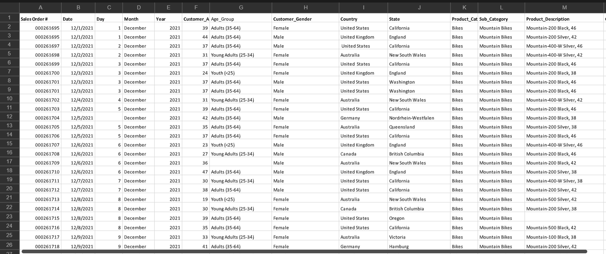

In this task, I worked on cleaning and preparing the "Bike Sales" dataset to make it ready for analysis. The goal was to improve the quality of the data by organizing and correcting the information in the dataset.
Through this activity, I gained practical experience in data cleaning and learned how proper data preparation helps ensure more reliable and accurate data analysis.
Back to Projects Show Project